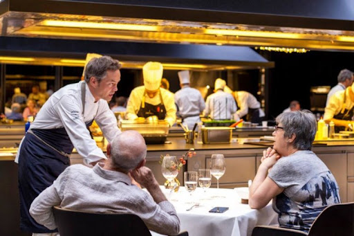
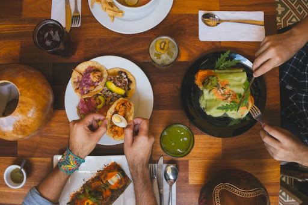
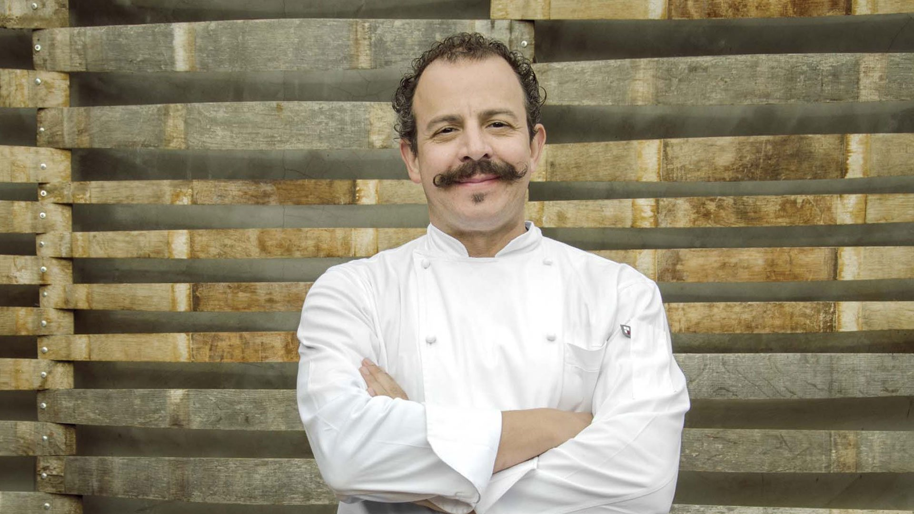

Mision
Satisfacer las necesidades gastronómicas de nuestros clientes, ofreciendo alimentos y servicios con la más alta calidad, donde se sobrepasen las expectativas de nuestros clientes y ser un espacio de trabajo que permita la realización personal y el Desarrollo de sus colaboradores en el grupo.
Tomando como estrategia principal el mejoramiento continúo de los estrictos estándares de higiene y buen servicio en un ambiente seguro, agradable y familiar a un precio justo.
Vision
Somos una empresa dedicada a brindar momentos inolvidables y servicios gastronómicos de alta
calidad; ponemos todo nuestro “amor” y máximo empeño en beneficio de nuestros clientes;
desarrollamos nuestro servicio a partir de los talentos y los valores de nuestros
colaboradores, somos una empresa que día a día lucha por desarrollar mejores condiciones
laborales y un mejor nivel de vida para nuestros colaboradores y sus familias, en beneficio de
la organización..

Objetivos
- *Brindar una gastronomía única e inolvidable, creada con nuestro sabor y creatividad.
- *Ofrecer la mejor atención a nuestros clientes.
- *Contar con personal altamente calificado en la preparación de comidas criollas y comidas marinas,los cuales deben tener un alto nivel de creatividad para innovar en los sabores de nuestros platos y bebidas
- *Contar con los mejores proveedores de alimentos para así ofrecer una mejor calidad en nuestros platillos.


Nuestra historia
Este restaurante fue fundado con la vision, proyeccion y entusiasmo de 1975 por el chef Benito Molina con el proposito de difundir nuestra exquisita y tradicional coicna antigua mexicana, fusionada con la comida contemporanea..
El Restaurante Viva Mexico es un amante de las tradiciones de nuestra región y nuestro país, con una mística de servicio y atención a nuestros comensales, pensando siempre en brindar a nuestra clientela el mejor ambiente en el mejor de Tláhuac, nos hemos esmerado para tener una excelente cocina típica mexicana con sabores de diferentes Estados de la República Mexicana..